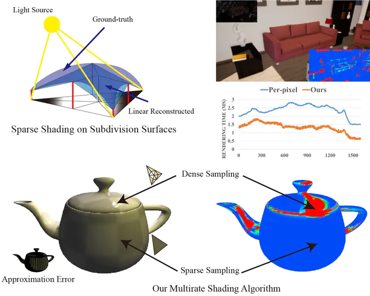
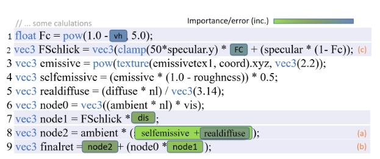
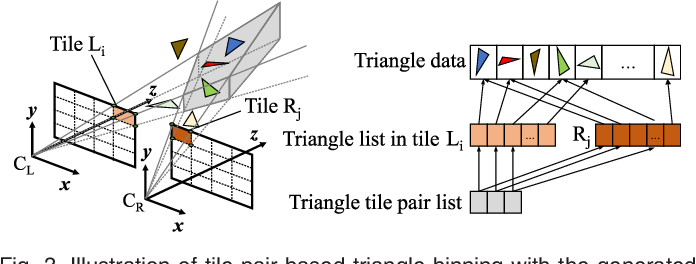
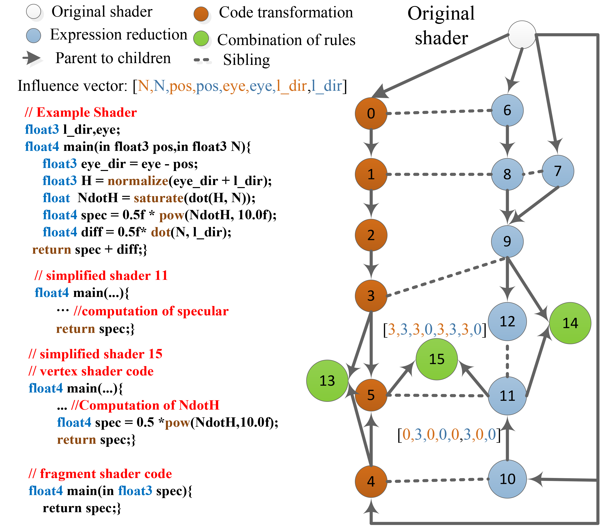
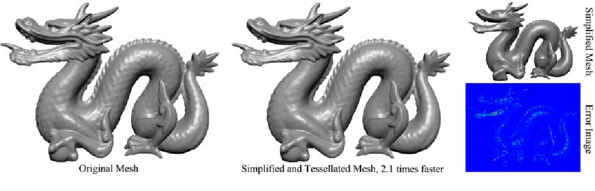
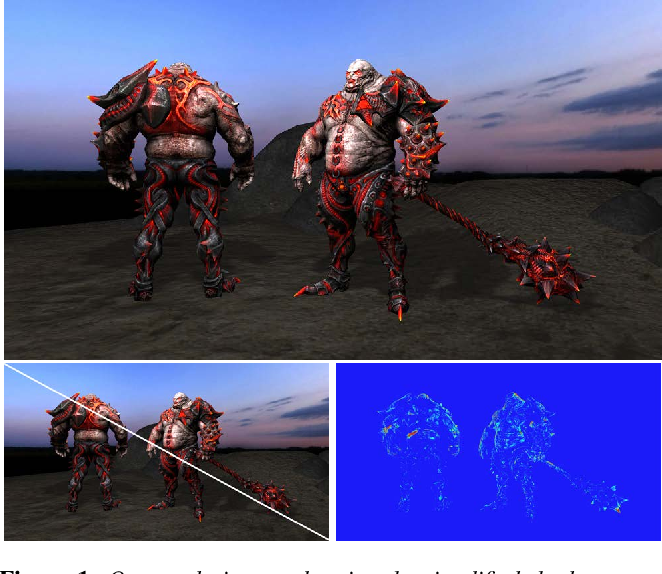
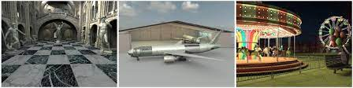

Using learned motion vector and recurrent feature to extrapolate multiple frames for realtime rendering.

Multirate Shading with Piecewise Interpolatory Approximation Yiwei Hu,
Yazhen Yuan,
Rui Wang,
Zhuo Yang,
Hujun Bao
Computer Graphics Forum, Proc. of Pacific Graphics (PG 2022).
We present a multirate shading approach via dynamic sparse sampling with piecewise linear reconstruction.

ShaderTransformer: Predicting Shader Quality via One-shot Embedding for Fast Simplification
Yuchi Huo, Shi Li, Yazhen Yuan, Xu Chen, Rui Wang, Wenting Zheng, H Lin, Hujun Bao Siggrapha, 2022 (Conferences Track)
We use transformer to predict visual impact of shader’s variables and expressions for fast shader code simplification.

Tile pair-based adaptive multi-rate stereo shading Yazhen Yuan, Rui Wang, Hujun Bao IEEE Transactions on Visualization and Computer Graphics , 2018 (IEEE VR 2019)
We found an useful tile pair structure and design a new gpu pipeline for efficient vr rendering.

Runtime shader simplification via instant search in reduced optimization space Yazhen Yuan, Rui Wang, Tianlei Hu, Hujun Bao Computer Graphics Forum , 2018 Proc. of Euro Graphics Symposium of Rendering (EGSR 2018)
We construct a graph to analysis relations between shader code variants, and search for fastest simplified shader during runtime.

Simplified and tessellated mesh for realtime high quality rendering Yazhen Yuan, Rui Wang, Jing Huang, Jiaya Jia, Hujun Bao Computers & Graphics , 2015 Proc. of CAD&Graphics 2015
For tessellation shader, we design a new mesh simplification and reconstruction method to render mesh with complexity geometry.

Automatic shader simplification using surface signal approximation Rui Wang, Xianjin Yang, Yazhen Yuan, Wei Chen, Kavita Bala, Hujun Bao
ACM Transactions on Graphics, Proceedings of ACM SIGGRAPH ASIA, 2014
We can move shader code to different shader stages to find the optimal shader code variants.

GPU-based out-of-core many-lights rendering Rui Wang, Yuchi Huo, Yazhen Yuan, Kun Zhou, Wei Hua,Hujun Bao
ACM Transactions on Graphics, Proceedings of ACM SIGGRAPH ASIA, 2013